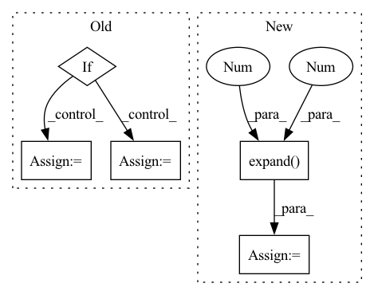

Pattern ID :24363
Before Change
tail_weights += torch.where(l_mask, left_weight, zero).sum(-1)
// a size (B,) mask that removes non-firing position
if keep_all_tails:
extend_mask = feat_lengths.new_ones((B,))
else:
extend_mask = tail_weights >= (beta / 2)
// // extend 1 fire and upscale the weights
// one = zero.fill_(1.0)After Change
// extend 1 fire and upscale the weights
if extend_mask.any():
// (B, T, C), may have infs so need the mask
upscale = (
torch.ones_like(output)
.scatter(
1,
feat_lengths.view(B, 1, 1).expand(-1, -1, C),
beta / tail_weights.view(B, 1, 1).expand(-1 , -1 , C) ,
)
)
output[extend_mask] *= upscale[extend_mask]In pattern: SUPERPATTERN
Frequency: 3
Non-data size: 5
Instances Fragment ID: 75697411
Project Name: george0828zhang/torch_cif
Commit Name: 68e2689c475308cd5043cf1d25c49891b23e946a
Time: 2022-02-23
Author: cc.chang0828@gmail.com
File Name: cif.py
M Class Name: AnonimousClass
N Class Name: AnonimousClass
M Method Name: cif_function(7)
N Method Name: cif_function(9)
M Parent Class:
N Parent Class:
M File Name: cif.py
N File Name: cif.py
M Start Line: 29
M End Line: 216
N Start Line: 27
N End Line: 197
Before Change
output <torch.Tensor>: (batch_size, n_sources, n_bins, n_frames)
latent <torch.Tensor>: (batch_size, n_bins, n_frames, embed_dim)
if self.fixed_attractor is None:
raise RuntimeError("Call self.set_fixed_attractor() beforehand.")
n_sources = self.fixed_attractor.size(0)
embed_dim = self.embed_dim
eps = self.eps
batch_size, _, n_bins, n_frames = input.size()
self.rnn.flatten_parameters()
if self.take_log:
x = torch.log(input + eps)
elif self.take_db:
x = 20 * torch.log10(input + eps)
else:
x = input
x = x.squeeze(dim=1).permute(0, 2, 1).contiguous() // (batch_size, n_frames, n_bins)
x, _ = self.rnn(x) // (batch_size, n_frames, n_bins)
x = self.fc(x) // (batch_size, n_frames, embed_dim * n_bins)
x = x.view(batch_size, n_frames, embed_dim, n_bins)
x = x.permute(0, 2, 3, 1).contiguous() // (batch_size, embed_dim, n_bins, n_frames)
latent = x.view(batch_size, embed_dim, n_bins * n_frames)After Change
latent = x.view(batch_size, embed_dim, n_bins * n_frames)
latent = latent.permute(0, 2, 1).contiguous() // (batch_size, n_bins * n_frames, embed_dim)
batch_fixed_attractor = self.fixed_attractor.expand( batch_size, -1 , -1 )
similarity = torch.bmm(batch_fixed_attractor, latent.permute(0, 2, 1)) // (batch_size, n_sources, n_bins * n_frames)
similarity = similarity.view(batch_size, n_sources, n_bins, n_frames)
mask = self.base_model.mask_nonlinear2d(similarity) // (batch_size, n_sources, n_bins, n_frames)
output = mask * input
latent = latent.view(batch_size, n_bins, n_frames, embed_dim) Fragment ID: 75697473
Project Name: tky823/dnn-based_source_separation
Commit Name: e05e8c7e39f6c678d58ce21705caa26f880c7119
Time: 2021-11-22
Author: delta9guitar97@gmail.com
File Name: src/models/danet.py
M Class Name: FixedAttractorDANet
N Class Name: FixedAttractorDANet
M Method Name: extract_latent(2)
N Method Name: extract_latent(2)
M Parent Class: nn.Module
N Parent Class: DANet
M File Name: src/models/danet.py
N File Name: src/models/danet.py
M Start Line: 338
M End Line: 369
N Start Line: 355
N End Line: 380
Before Change
)
// Collect final samples in temporary tensor
if hasattr(self.base_leaf, "cardinality"):
cardinality = self.base_leaf.cardinality
else:
cardinality = 1
tmp = torch.zeros(
context.num_samples,
self.in_features,After Change
// assert (indices_in_tmp == indices_in_gather).all()
indices_in_gather = indices_in_gather.view(num_samples, 1, -1, 1).expand( -1, samples.shape[1], -1 , -1 )
samples = samples.gather(dim=-1, index=indices_in_gather)
samples.squeeze_(-1) // Remove num_leaves dimension
return samples Fragment ID: 75697479
Project Name: braun-steven/simple-einet
Commit Name: e657fc668bd0f87f5e622a8b2549cd9e8ade437a
Time: 2022-01-11
Author: steven.lang.mz@gmail.com
File Name: simple_einet/factorized_leaf_layer.py
M Class Name: FactorizedLeaf
N Class Name: FactorizedLeaf
M Method Name: sample(3)
N Method Name: sample(3)
M Parent Class: AbstractLayer
N Parent Class: AbstractLayer
M File Name: simple_einet/factorized_leaf_layer.py
N File Name: simple_einet/factorized_leaf_layer.py
M Start Line: 63
M End Line: 120
N Start Line: 68
N End Line: 147